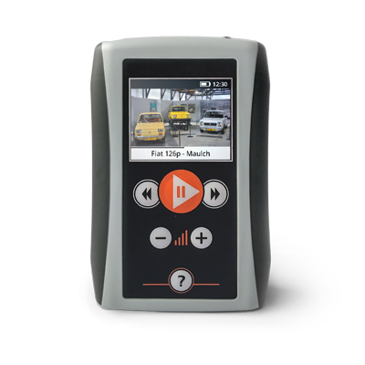

Jahrhunderthalle, Centennial Hall, Hala Ludowa, wreszcie Hala Stulecia to różne nazwy jednej monumentalnej budowli będącej chlubą Wrocławia. Hala ze względu na swe walory artystyczne została w 2006 roku wpisana na listę światowego dziedzictwa UNESCO, co dodatkowo wpłynęło na zwiększenie liczby turystów chcących ją obejrzeć. Wszyscy chętni mogą zwiedzić halę z audioprzewodnikiem, przygotowanym w kilku wersjach językowych.
Hala Stulecia stoi we wrocławskim parku Szczytnickim od ponad stu lat. Pomysł jej budowy pojawił się na początku ubiegłego wieku, kiedy podjęto decyzję o zorganizowaniu we Wrocławiu wielkiej wystawy prezentującej dorobek gospodarczy – i nie tylko – Śląska jak jednej z prowincji II Rzeszy. Ogromna hala miała być symbolem jej dynamicznego rozwoju.
Budynek zaprojektował miejscowy architekt i urbanista Maks Berg w stylu modernistycznym. Jego dzieło przeszło do historii.
Dzięki audioprzewodnikowi poznajemy wszystkie okoliczności powstania hali oraz jej tajemnice budowlane. Audio guide prowadzi nas przez efektowne korytarze i zakamarki, by wreszcie pokazać samą halę, która zachwyca wielkością i rozwiązaniami technologicznymi.
Warto jednak podkreślić, że jest to atrakcja dla wszystkich, nie tylko dla inżynierów!



MG100 to przenośny audio przewodnik przeznaczony do multimedialnego zwiedzania obiektów zamkniętych oraz przestrzeni otwartych.
W trakcie zwiedzania odbiornik lokalizuje aktualne położenie zwiedzającego względem wcześniej ustalonych obiektów i obszarów. W zależności od tego rozpoczyna odtwarzanie wcześniej przygotowanych nagrań. Urządzenie wyposażone jest w moduł GPS umożliwiający lokalizowanie zwiedzającego w terenie.
Hala Stulecia
ul. Wystawowa 1
51-618 Wrocław
woj. Dolnośląskie 51.106860, 17.077280
51.106860, 17.077280
Strona WWW obieku: http://halastulecia.pl/